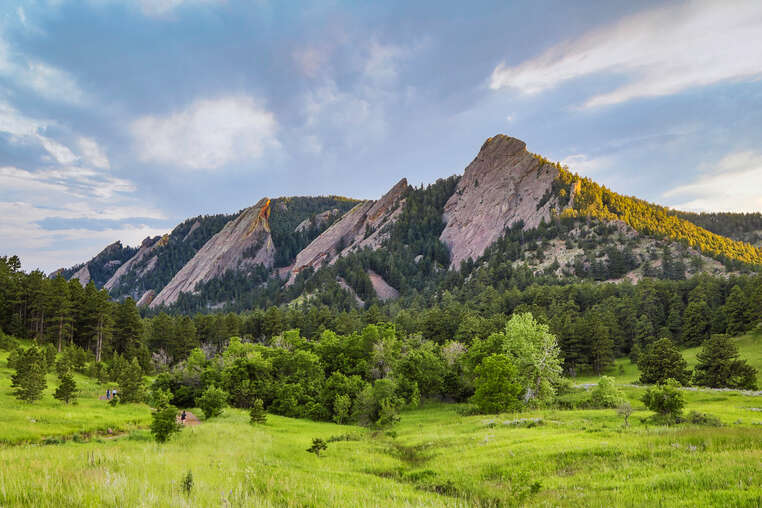
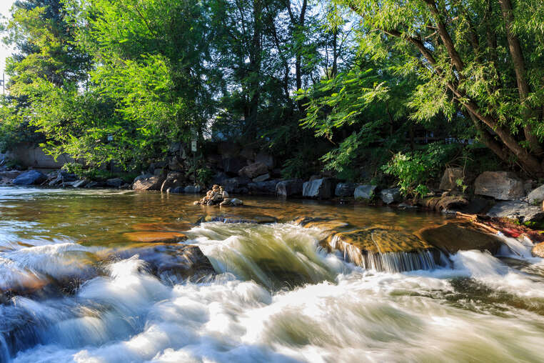
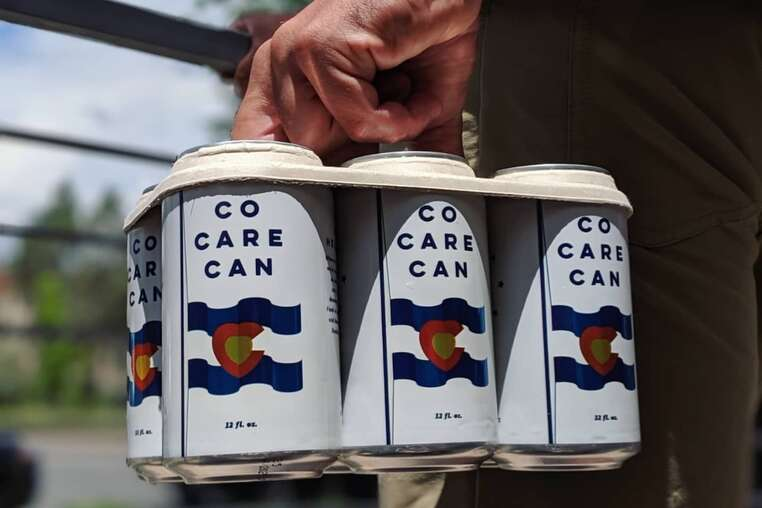

I have done dozens of activities in Boulder, and here is some of my top favorites!

People hiking Chautauqua is a common site, credit Brett Beyer
Nestled in the Rocky Mountains, this fact alone already makes Boulder a prime candidate for hiking! The best place to do so at is Chautauqua, which features a historic dining hall, auditiorium, and rental cottages.

People tubing down Boulder Creek is a common sight in the summer, credit Kit Leong
Locals and tourists alike are commonly seen tubing down Boulder Creek, which goes through Boulder itself. A popular spot to drop in is by the public library.

Co Care Can by Upslope Brewing Company, a staple from Boulder
Avery, Upslope, VisionQuest, etc. are just some of the craft beer companies that you can find in Boulder. Boulder hosts a very popular craft beer scene, and one simply can't let that go to waste.
Homepage Travel Stories How to get Started About Me Restaurants Places